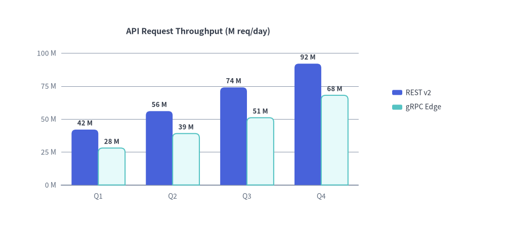

drawlib.charts.bar
Quantitative categorical comparison chart supporting vertical columns, horizontal bars, side-by-side grouped clusters (bar_mode="group"), cumulative stacks (bar_mode="stack"), outer-tip rounding (bar_r), and progressive animation ratios (draw_ratio).
from drawlib.charts.bar import Axis, BarChart, Mode, Orientation, Series

Source Code
from drawlib.canvas import save, setup
from drawlib.charts.bar import BarChart
from drawlib.styles import Styles
setup(width=120, height=54)
chart = BarChart(
axis_line_style=Styles.Muted,
categories=["Q1", "Q2", "Q3", "Q4"],
width=82.0,
height=44.0,
title="API Request Throughput (M req/day)",
title_style=Styles.DarkBold.patch(text_size=11.5),
orientation="vertical",
bar_mode="group",
bar_width_ratio=0.72,
bar_r=1.0,
axis_text_style=Styles.Muted.patch(text_size=10.0),
grid_style=Styles.MutedThin,
value_text_style=Styles.DarkBold.patch(text_size=9.5),
value_format="{:.0f}M",
)
chart.add_series("REST v2", [42.0, 56.0, 74.0, 92.0], style=Styles.PrimaryFlat)
chart.add_series("gRPC Edge", [28.0, 39.0, 51.0, 68.0], style=Styles.SecondaryNeutral)
chart.configure_y_axis(min_value=0.0, max_value=110.0, tick_step=25.0, unit="M")
chart.draw((6.0, 5.0))
chart.draw_legend(
(93.0, 32.0),
text_style=Styles.Dark.patch(text_size=10.0),
orientation="vertical",
item_gap=3.5,
)
save()
classBarChart#
Keyword-only chart builder managing categorical/numerical axes, data series, value formatting, and decoupled legend rendering.
class BarChart:
def __init__(
self,
*,
axis_line_style: Style,
width: float = 60.0,
height: float = 40.0,
categories: list[str] | None = None,
orientation: Literal["vertical", "horizontal"] = "vertical",
bar_mode: Literal["group", "stack"] = "group",
bar_width_ratio: float = 0.7,
bar_r: float = 0.0,
axis_text_style: Style | None = None,
grid_style: Style | None = None,
value_text_style: Style | None = None,
value_format: str | Callable[[float], str] | None = None,
background_style: Style | None = None,
title: str = "",
title_style: Style | None = None,
) -> None: ...
| Parameter | Type | Default | Description |
|---|---|---|---|
axis_line_style |
Style |
Required | Baseline and tick stroke style. |
width / height |
float |
60.0 / 40.0 |
Bounding box dimensions in logical canvas units. |
categories |
list[str] | None |
None |
Ordered labels displayed along the categorical axis. |
orientation |
"vertical" | "horizontal" |
"vertical" |
Column growth direction (vertical = upward, horizontal = rightward). |
bar_mode |
"group" | "stack" |
"group" |
Side-by-side clustered bars or cumulative stacked bars. |
bar_width_ratio |
float |
0.7 |
Relative slot fill ratio in [0.1, 1.0]. |
bar_r |
float |
0.0 |
Outer-tip corner radius applied strictly to the 2 distal corners of each bar. |
value_format |
str | Callable | None |
None |
Python format string (e.g. "{:.1f}M") or formatter callable for bar labels. |
methodBarChart.add_series(name, values, style, ...)#
Appends a named quantitative series to the chart and returns the mutable Series model.
def add_series(
self,
name: str,
values: list[float],
style: Style,
legend_text_style: Style | None = None,
*,
show: bool = True,
draw_ratio: float = 1.0,
draw_direction: Literal["bottom_to_top", "left_to_right"] | None = None,
) -> Series: ...
methodBarChart.configure_y_axis(...)#
Configures bounds, ticks, gridlines, and number formatting on the vertical axis (value_axis when orientation="vertical").
def configure_y_axis(
self,
*,
min_value: float | None = None,
max_value: float | None = None,
tick_step: float | None = None,
format: str | Callable[[float], str] | None = None,
unit: str | None = None,
label: str | None = None,
show_grid: bool | None = None,
) -> Axis: ...
methodBarChart.draw(xy, *, width, height, align, scale)#
Renders the configured chart onto the canvas anchored at xy ("bottom_left" by default).
def draw(
self,
xy: tuple[float, float] = (0.0, 0.0),
*,
width: float | None = None,
height: float | None = None,
align: Literal["bottom_left", "center"] = "bottom_left",
scale: float = 1.0,
) -> None: ...
methodBarChart.draw_legend(xy, text_style, ...)#
Renders a standalone series color-swatch legend at arbitrary canvas coordinates xy.
def draw_legend(
self,
xy: tuple[float, float],
text_style: Style,
orientation: Literal["vertical", "horizontal"] = "vertical",
swatch_width: float = 2.4,
swatch_height: float = 1.2,
item_gap: float = 4.0,
*,
scale: float = 1.0,
) -> None: ...
classSeries#
Mutable data model returned by add_series(), supporting frame-by-frame animation updates on .draw_ratio and .values.
class Series:
name: str
values: list[float]
style: Style
show: bool = True
draw_ratio: float = 1.0